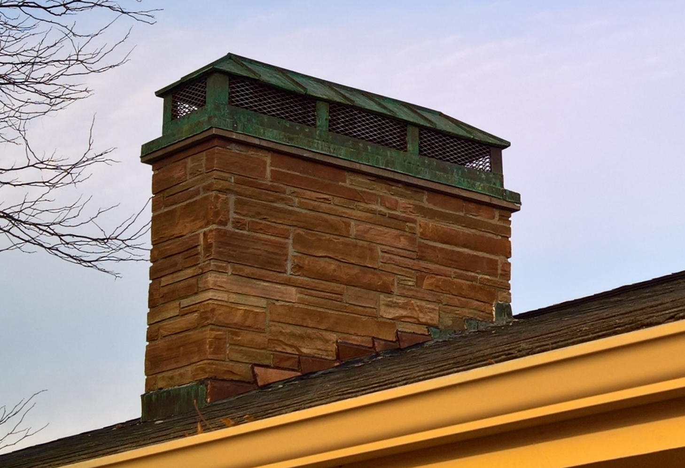

ABOUT
COPPER ACCENT LLC
Established in 2020
Rio Rancho, NM

How it Began
With a hobby of making home furnishings from both wood and metal for the past several decades but too busy with a day job to allow pursuit of starting a business, retirement and a move to New Mexico in 2019 provided the opportunity to seriously consider turning a hobby into a business.
The objective for this new business was to provide local, uniquely designed art that could easily fit in a southwestern home with an emphasis upon copper as a key element in the design.
But the interest in working with copper began many years earlier back in the 1960s when he lived next to a church in Wisconsin that was having a copper steeple built. The builders left pieces of scrap copper in the parking lot, which he picked up and made a few simple items. That's how the interest began.
Later, after high school, a job at a metal fabrication shop making custom industrial products fed his interest in metal work. After that, he worked in IT for a few decades from which he retired in 2019. But during that period in IT there were projects in my spare time involving the use of copper, such as this copper chimney enclosure at my previous home in 2016.
With a hobby of making home furnishings from both wood and metal for the past several decades but too busy with a day job to allow pursuit of starting a business, retirement and a move to New Mexico in 2019 provided the opportunity to seriously consider turning a hobby into a business.
The objective for this new business was to provide local, uniquely designed art that could easily fit in a southwestern home with an emphasis upon copper as a key element in the design.
But the interest in working with copper began many years earlier back in the 1960s when he lived next to a church in Wisconsin that was having a copper steeple built. The builders left pieces of scrap copper in the parking lot, which he picked up and made a few simple items. That's how the interest began.
Later, after high school, a job at a metal fabrication shop making custom industrial products fed his interest in metal work. After that, he worked in IT for a few decades from which he retired in 2019. But during that period in IT there were projects in my spare time involving the use of copper, such as this copper chimney enclosure at my previous home in 2016.

"I have always enjoyed making unique projects that were not found in stores or online and knew others probably had the same desire to own something that was unique and didn't have the look of being mass-produced by someone far away who had no real connection to the final product or customer." - Kurt